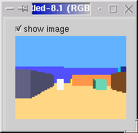

Saját szimulációval részt vettem a Cyberbotics által rendezett 3D
robotszimulációs versenyen 1999. április 15. és 1999. július 14. közötti elsõ,
és 1999. szeptember 1. és 2000. szeptember 1. közötti második kiírásán.
Az elsõ versenyen
második lettem, a másodikat pedig megnyertem.
A feladat a következõ volt:
Egy 1mx1m-es szimulált 3D világba elhelyezett két robot verseng az
energiaforrásokért. Az idõ múlásával a robotok energiaszintje folyamatosan
csökken, így meg kell találniuk a teremben található négy energiaforrás
valamelyikét, és energiát kell felvenniük belõle. Ez egyszerûen annyit jelent,
hogy a forrás elõtt megfelelõ közelségben el kell haladni. Az energiaforrás
egy ilyen esemény után feltöltõdik, majd újra használható állapotba kerül. A
forrás aktuális állapota megállapítható a színébõl: ha zöld használható, ha
piros nem. Az idõ múlásával a források feltöltõdési ideje nõ, így az
ügyetlenebb (vagy pechesebb) robotnak egy idõ után nullára csökken az
energiaszintje. Ekkor a másik robot megnyerte a mérkõzést.
Az alábbi kép egy tipikus környezetet mutat.
A versenyzõk feladata az volt, hogy a szenzorok által nyújtott információ
felhasználásával (80x60 fényérzékelõ szenzorok, infravörös akadályszenzorok) a
kerekeken guruló jármû motorjait, úgy mûködtesse, hogy abból gyõztes stratégia
alakuljon ki.
A következõ két kép a robot fényérzékelõi által észlelt világot mutatja, az
utóbbin éppen egy energiaforrás látszik.
|  |
Az általam készített kontroller egy elõre huzalozott architektúra volt, mely kis mértékben Brooks subsumption modelljét követi. Mzperx nevû teremtményem a bemelegítõ fordulók után a körmérkõzések során mindenkit legyõzött, majd a két elsõ közti hatfordulós csatában alulmaradt.
Íme egy jellemzõ küzdelem a körmérkõzésekbõl. Mzperx fekete fejjel (fényérzékelõvel) látható.
A kontroller fõ hiányossága az volt, hogy nem épített kognitív térképet,
így egy már megtalált energiaforrást is el tudott hibázni, és ami még
súlyosabb nullára tudott jutni az energiaszintje, úgy, hogy voltak feltöltött
energiaforrások a teremben.
Másik probléma, ami miatt a döntõt is elveszítettem, az elakadás, vagyis
amikor a robot beszorul falak közé, nem tud onnan kikeveredni, és elpusztul.
Ez kognitív térképpel szintén kezelhetõ lenne.
A versenyrõl, és az eredményeimrõl bõvebb információ a Webots hivatalos honlapján található.
Az oldalt készítette: Szabó Richárd.